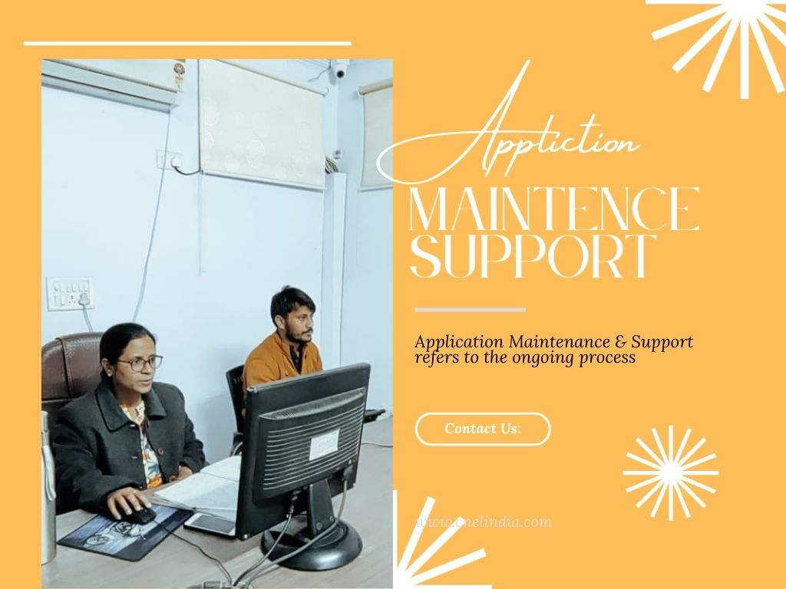

Application Maintenance & Support services are necessary to ensure that an application remains operational and continues to meet the needs of its users. These services may include bug fixes, software updates, security patches, and performance optimization. Additionally, support services can provide assistance to users who are experiencing issues with the application, helping them to resolve problems and continue using the application effectively. Overall, Application Maintenance & Support services are important for ensuring the ongoing reliability, stability, and security of an application, and for maintaining user satisfaction.

Why do you need Application Maintenance & Support services?
How a small business can grow by using Application Maintenance & Support Services.
Small businesses can grow by using Application Maintenance & Support Services in a few ways:
1.Improved reliability and stability: By regularly maintaining and updating their applications, small businesses can ensure that they are running smoothly and without errors, which can increase user satisfaction and loyalty.
2.Increased efficiency: By using Application Maintenance & Support Services, small businesses can optimize their applications to work more efficiently, which can improve productivity and reduce costs.
3.Enhanced security: These services can help small businesses to protect their applications from security threats, which can help to protect sensitive data and reduce the risk of data breaches.
4.Better scalability: With Application Maintenance & Support Services, small businesses can ensure that their applications can handle increased traffic and usage as their business grows, which can help to support growth and expansionBetter scalability: With Application Maintenance & Support Services, small businesses can ensure that their applications can handle increased traffic and usage as their business grows, which can help to support growth and expansion
5.Better user experience: By providing timely support, small businesses can improve the user experience, which can lead to positive feedback and more customers.
Overall, Application Maintenance & Support Services can help small businesses to improve the reliability, stability, efficiency, security, and scalability of their applications, which can support growth and expansion.